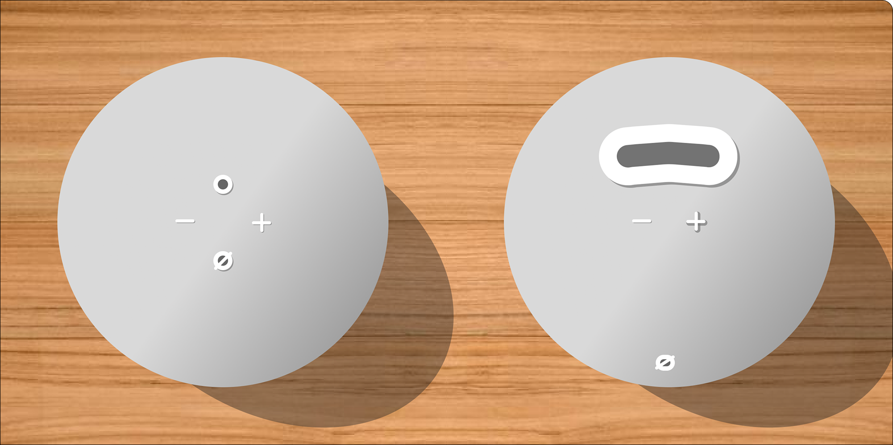
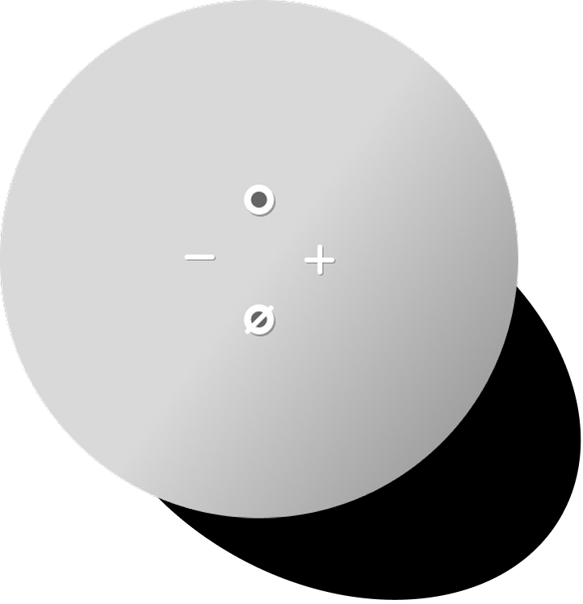
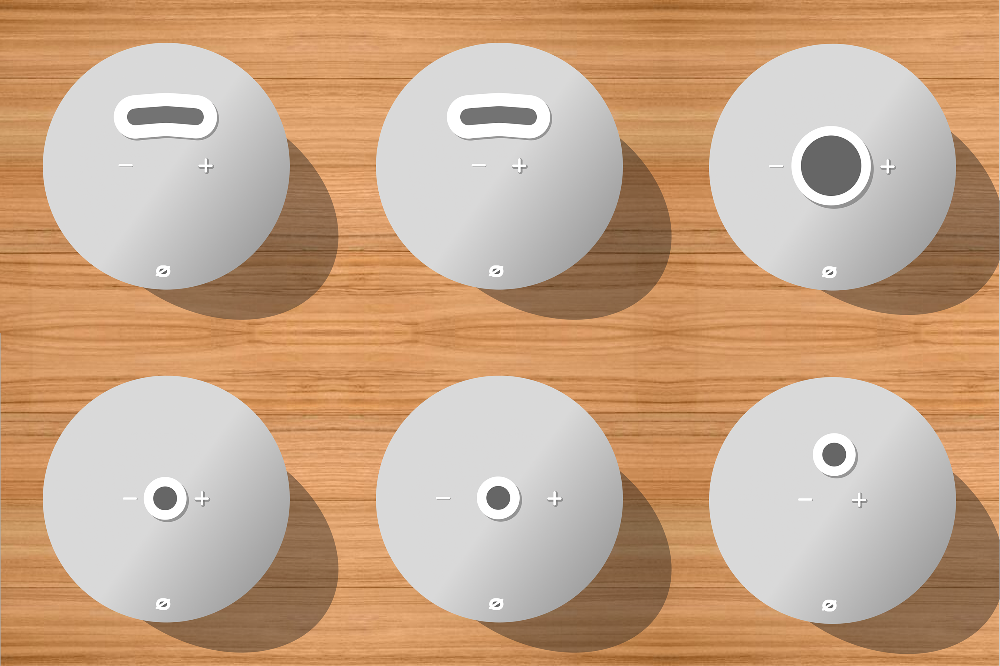
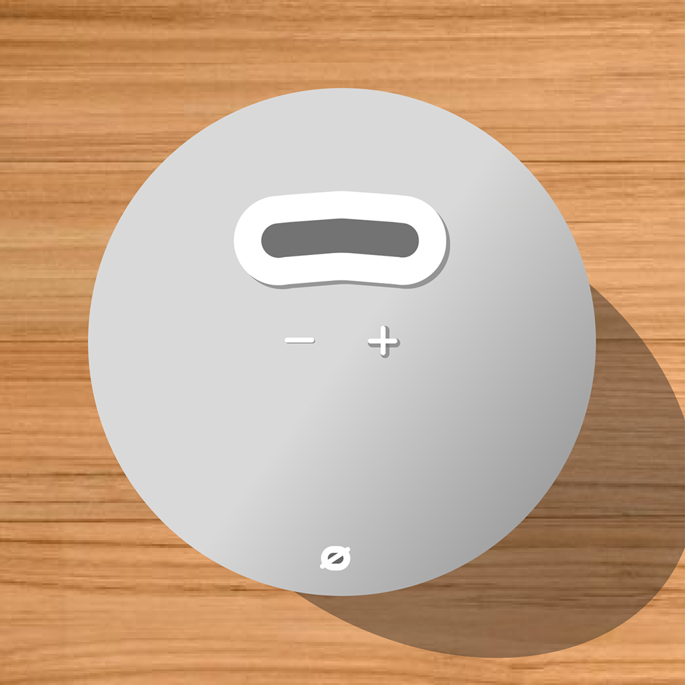

04

Amazon Echo Dot
Redesigning the Amazon 5th Gen Echo Dot’s alarm experience.

Background
The Amazon 5th Gen Echo Dot functions as a normal alarm, allowing the user to preset alarm schedules, customize alarm noises, snooze, and stop the alarm through both verbal and physical commands. I evaluated the effectiveness and ease of these interactions with the device, specifically in a user’s waking-up experience, prototyped redesigns of the physical interactions, and reimagined the verbal interactions.
This project was completed as part of a systems design course (INLS 418) at UNC Chapel Hill.
Overview
Problem
1. There is a high rate of misinputs when interacting with the Echo Dot during the wake-up experience.
2. The time it takes to complete an action with the Echo Dot is extended as a result.
User Goals
1. Wake up on time.
2. Possible snoozing of the alarm to sleep in.
3. Decide how long they can sleep in.
4. Turn off the alarm.
Limitations
• Couldn’t test on real users unless I watched their sleep to wake-up process.
• Had to rely on personal experience as the sole user.
• Forum and secondary research did not mention specific issues and mostly praised the device.
Results
1. Redesigned the layout of the top buttons, leading to an estimated 70% reduction in error rate and an average task completion time decrease from about 6 seconds to 2 seconds when turning off the alarm.
2. Included a new physical interaction to have the device tell the time.
3. Removed the need to say the wake-word “Alexa” before issuing commands to the device, theoretically cutting task completion time by half.
4. Lower cognitive load and easier decision-making for the user because new features better support situational awareness.
Research
Target Audience
Individuals who use the Amazon Echo Dot as an alarm, and me.
All Alarm Features
App Settings
• Preset alarms with schedules
• Change the audio that plays, however, if it plays a playlist, it will only play the first song.
• Adjust the alarm volume.
• Option for gradually increasing the volume the longer it goes on.
Verbal Commands
• Say “Alexa, set an alarm for [time]” to set an alarm.
• Say “Alexa, wake me up in [x time]” to set an alarm x minutes/seconds away.
• Say “Alexa, snooze for [x time]” to snooze for X minutes/hours.
• Say “Alexa, stop” or a variant of that to stop the alarm.

Physical Commands
• Circle Button - Turns off the alarm.
• Minus Button - Turns the volume down while the alarm plays.
• Plus Button - Turns the volume up while the alarm plays.
• Touching the top of the device - Snoozes the alarm for 9 minutes.
• Circle with Slash Button - Turns off user verbal input (mutes) while the alarm plays.
Usability Tests
I conducted a series of tests by evaluating my own experience with the alarm.
Problem 1
~60% error rate with physical button interactions, particularly for the circular action button.
- Estimated goal completion time when trying to turn off the alarm with the action button is ~6 seconds.
- Buttons are very small and are similar shapes.
- Tactically, they feel similar, so it was difficult to find which one was the action button.
- Hinders level 3 situational awareness. *
Problem 2
~40% error rate in hearing the wake word Alexa.
- On average, had to say “Alexa stop” 2 - 3 times before it would register through the device.
- Hinders level 3 situational awareness. *
Problem 3
There was no physical action to show the time.
- If I had snoozed 3 times and didn’t remember the time anymore, I had to rely on verbal commands.
- Hinders level 2 situational awareness and therefore level 3 too. *
Positive
Consistent low error rate with the snooze physical command (touching the top).
- Estimated goal completion time for snoozing the alarm by touching the top is ~2 seconds.
- Supports level 3 situational awareness. *
* Levels of Situational Awareness:
- Sensory Perception - What we see, hear, and feel. The alarm going off. Feeling the buttons.
- Comprehension - Translating the sensory perception into understanding. Do we understand what time it is? Do we understand when we have to wake up?
- Projection - Understanding the situation and deciding what to do. Do we have to turn the alarm off and wake up immediately? Or can we snooze for 10 more minutes?
Key Findings
+ Goal completion is possible through either physical or verbal commands, or both, with the exception of showing the time, which is only available as a verbal command.
+ It was easy to snooze the alarm by just touching the top of it.
- Due to frustration with the wake word not working, I relied on physical interactions instead.
- Buttons tactically felt similar, so it was difficult to distinguish through feel alone which one was the action button unless, I lifted my head to look (which I didn’t always want to do).
Design Process
Ideation
Individuals who use the Amazon Echo Dot as an alarm, and me.
Problem 1 - Low differentiation in size and shape of physical buttons.
Tactile Prioritization of Physical Actions
- Action button (circle button) - Change in shape, size, elevation, and/or placement to increase hit rate.
- Snoozing (touching top of the device) - Leave it as is. Ensure that no new changes hinder this action.
- Volume buttons (- and + buttons) - Distinguish through shape, size, elevation, and/or placement.
- Mute button (not relevant for the alarm experience) - Irrelevant to the alarm experience, so it could be moved to the side. However, it’s relevant in other parts of the Echo Dot experience, though not often, so distinguishability is still important.
Problem 2 - High error rate in verbal command interpretation.
- If it detects speaking, it turns the alarm volume down, which also lets the user know that it’s listening.
- Remove the need for the wake word and immediately start listening for commands upon the alarm going off.
Problem 3 - No physical interaction for showing the time.
- Add a new button or interaction.
- Too many buttons would get clustered.
- A new interaction such as squeezing the Echo Dot could show the time, or tapping the bottom half of the device.
All Variations

Final Mockup

Larger, elevated action button
Allows user to easily turn off the alarm without mis-clicking another.
Elevated “+” button
Allows user to differentiate from the “−” button more easily.
New volume button placement
They are closer together, which allows the user to feel both at the same time and choose the button that corresponds with their needs.
Unchanged snooze action
To snooze, the user should still touch the top of the Alexa.
New time-telling action
Tapping the lower half of the device will make the Alexa announce the current time.
Clarity in verbal commands
While the alarm is going off, the device will not need the wake-word to listen to commands. When the user is speaking, the volume will be lowered to allow for clarity in hearing commands.
Conclusion
Reflection
This project was a great example of applying UX principles beyond just digital interfaces and into physical products. It’s furthered my awareness of physical experiences around me, whether that’s in a car’s dashboard or my cup of coffee in the morning.
Redesigning this device, having to take into consideration the situation around it, was also unique. Many previous projects I have worked on can be used in any situation and are primarily focused on the isolated experience itself. In this case, the product is tied to the situation it exists within, and so, understanding the levels of situational awareness, its obstacles, and the support the device provided was essential.
Next Steps
1. If I had the capacity to build the device or install an attachment that would allow me to test this, I would.
2. I would also ask others to use the alarm experience and report back their experience with it.
Possible Reimaginings
1. Switching snooze and time actions.
2. Implementing more unique actions, such as squeezing the Alexa.